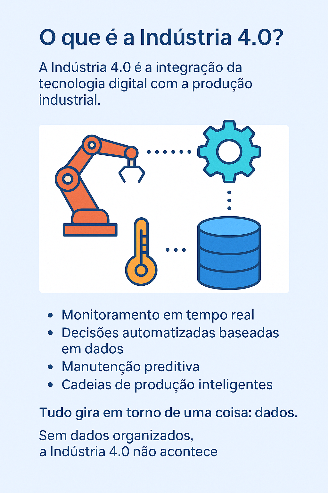

A Bagunça Invisível dos Dados
Publicado em: 30 de abril de 2025
O que são dados?
 O que chamamos de "dados" são, na verdade, observações sobre o que acontece no mundo real.
São pequenos registros, pequenos pedaços da realidade que, quando organizados, contam histórias poderosas.
Pense por um instante...
Quando você sobe na balança e vê o número 82,5 kg — isso é um dado.
Quando uma loja registra que "Maria comprou dois livros de romance às 15h" — isso é um dado.
Quando o sensor de temperatura de um equipamento marca 78,3 ºC — isso também é um dado.
Cada um desses exemplos é uma observação isolada, capturada por sistemas, sensores, pessoas ou softwares.
Mas dados sozinhos são como peças soltas de um quebra-cabeça:
só mostram o quadro completo quando são organizados, conectados e interpretados.
________________________________________
O que chamamos de "dados" são, na verdade, observações sobre o que acontece no mundo real.
São pequenos registros, pequenos pedaços da realidade que, quando organizados, contam histórias poderosas.
Pense por um instante...
Quando você sobe na balança e vê o número 82,5 kg — isso é um dado.
Quando uma loja registra que "Maria comprou dois livros de romance às 15h" — isso é um dado.
Quando o sensor de temperatura de um equipamento marca 78,3 ºC — isso também é um dado.
Cada um desses exemplos é uma observação isolada, capturada por sistemas, sensores, pessoas ou softwares.
Mas dados sozinhos são como peças soltas de um quebra-cabeça:
só mostram o quadro completo quando são organizados, conectados e interpretados.
________________________________________
Exemplos práticos de dados no seu dia a dia:
- Na sua rotina pessoal: O número de passos que seu smartwatch registra enquanto você caminha. A lista de músicas que você mais ouviu no Spotify este mês.
- Num negócio local: Quantos clientes entraram hoje na loja. Quais produtos ficaram encalhados no estoque. Quantos chamados de manutenção foram abertos nesta semana.
- Na indústria: Horas de operação de um equipamento crítico. "João clicou em um link de uma oferta especial." Variação do preço de uma ação. Análises de pressão e temperatura ao longo do tempo.
Por que organizar os dados é fundamental?
Imagine que você acabou de receber todas as peças de um quebra-cabeça. As peças estão ali: coloridas, variadas, algumas com cantos retos, outras com formas confusas. Mas... elas estão jogadas em um saco. Sem tampa da caixa para mostrar a imagem final. Sem divisões por cor ou formato. Você teria coragem de montar esse quebra-cabeça? Seria quase impossível, certo? É exatamente isso que acontece em muitas empresas hoje. Elas têm dados — muitos, às vezes milhares de registros por dia — mas estão espalhados, desconexos, bagunçados. O retrato da realidade está perdido no meio da desordem. Sem organização, dados não trazem clareza, trazem confusão.Desafios da organização dos dados
Imagine tentar responder as perguntas:
- “Como posso aumentar minhas vendas e meu lucro?”
- “Em qual ação devo investir?”
- “Qual equipamento está mais propenso a quebrar?”
- “Como posso entender melhor meus clientes?”
- “Qual a chance de um cliente parar de comprar comigo?”
- “Como posso viver um estilo de vida mais saudável?”
À primeira vista, parece que basta olhar para os números certos e encontrar a resposta. Mas a realidade é bem diferente. O caminho dos dados até a resposta é cheio de armadilhas, desvios e becos sem saída.
Muitas vezes, seguimos uma linha de análise que parece promissora — e acabamos chegando em um ponto morto. Outras vezes, uma simples intuição, um palpite inicial que parecia irrelevante, pode abrir a trilha para a solução mais valiosa.
Trabalhar com dados é mais parecido com explorar uma floresta desconhecida do que seguir uma estrada pavimentada. Você coleta sinais, testa hipóteses, combina pedaços de informação que isoladamente parecem pequenos — mas juntos formam uma visão completa.
É um processo que exige:
- Curiosidade para explorar possibilidades
- Disciplina para validar suposições
- Criatividade para conectar pontos aparentemente distantes
- Organização para não se perder no volume e na complexidade
O que é a Tomada de Decisão Baseada em Dados (DDD)?
A tomada de decisão baseada em dados, ou Data-Driven Decision Making (DDD), é a prática de usar análises e evidências extraídas de dados para orientar escolhas estratégicas, em vez de depender apenas de intuição, experiência pessoal ou "achismos". Por exemplo: • Um profissional de marketing experiente pode escolher anúncios com base apenas em seu feeling, intuição e anos de experiência no setor. • Já outro profissional pode cruzar dados reais de campanhas anteriores, taxas de clique, padrões de comportamento de compra, tempo de atenção dos consumidores — e, com base nessas evidências, decidir quais anúncios investir e quais ajustar. • E o mais eficiente: muitos combinam experiência + análise de dados, aumentando drasticamente a chance de sucesso. Importante: A decisão orientada a dados não precisa ser absoluta. Não é "só dados" versus "só instinto". Na prática, DDD é um espectro: Empresas e profissionais utilizam dados em maior ou menor grau, dependendo do contexto, da cultura da empresa e do nível de maturidade analítica. ________________________________________Por que a Tomada de Decisão Baseada em Dados é tão poderosa?
- Reduz viés humano: Nossas experiências pessoais, embora valiosas, são limitadas. Dados ajudam a corrigir vieses invisíveis.
- Traz previsibilidade: Análises mostram padrões e tendências que seriam imperceptíveis apenas na observação direta.
- Aumenta a agilidade: Com sistemas organizados, uma empresa pode reagir rapidamente a mudanças de mercado com base em números, não suposições.
- Aumenta a confiança nas decisões: É muito mais fácil defender uma estratégia apoiada em evidências do que em opiniões subjetivas.
Exemplos práticos onde DDD faz a diferença:
- Operações industriais: Analisar dados de sensores para prever manutenção antes de falhas ocorrerem (manutenção preditiva).
- Marketing e vendas: Ajustar campanhas de acordo com comportamento real dos clientes, não apenas com base em gosto pessoal.
- Recursos humanos: Tomar decisões de contratação e promoções baseadas em métricas de desempenho concretas, e não apenas em impressões subjetivas.
- Setor financeiro: Detectar fraudes por padrões anômalos em transações bancárias em vez de apenas auditorias manuais.
DDD não é sobre eliminar o fator humano Pelo contrário. É sobre usar dados para potencializar a capacidade humana de tomar melhores decisões. Experiência + Dados = Decisões muito mais inteligentes. Assim, a intuição deixa de ser chute — e vira intuição informada.________________________________________
Como dar os primeiros passos para ser mais data-driven?
- Organize os dados (não adianta querer ser data-driven com planilhas bagunçadas).
- Defina quais indicadores realmente importam.
- Estabeleça ciclos curtos de análise e ação. (não adianta analisar uma vez por ano só!)
- Combine dados com experiência. Nem tudo estará nos números, mas os números mostram muito mais do que o olhar humano sozinho pode captar.
Dados, Indústria 4.0 e o Novo Cenário Empresarial
 Estamos vivendo uma transformação silenciosa, mas profunda. Com a disponibilidade massiva de dados — sensores, máquinas inteligentes, sistemas corporativos, redes sociais —, empresas de todos os setores têm acesso a um volume e variedade de informações nunca vistos antes. No passado, times inteiros de analistas e estatísticos podiam passar semanas estudando conjuntos de dados relativamente pequenos. Hoje, o volume de dados cresce tão rápido que não é mais possível analisar tudo manualmente. Ao mesmo tempo: • Computadores se tornaram extremamente poderosos. • A internet e redes locais conectam todos os pontos do processo. • Novos algoritmos de aprendizado de máquina e inteligência artificial permitem encontrar padrões que antes seriam invisíveis. Essa convergência de dados, poder computacional e inteligência algorítmica deu origem ao conceito da Indústria 4.0. ________________________________________O que é a Indústria 4.0?
A Indústria 4.0 é a integração da tecnologia digital com a produção industrial. Ela conecta sistemas físicos (máquinas, sensores, equipamentos) com sistemas digitais (bancos de dados, algoritmos, softwares analíticos) — permitindo:
- Monitoramento em tempo real
- Decisões automatizadas baseadas em dados
- Manutenção preditiva
- Cadeias de produção inteligentes
Tudo gira em torno de uma coisa: dados. Sem dados organizados, a Indústria 4.0 não acontece.
________________________________________O Desafio Invisível da Indústria 4.0
Apesar da promessa tecnológica, muitas empresas ainda não conseguem colher os frutos da Indústria 4.0. Por quê? Porque os dados continuam bagunçados. Veja alguns exemplos:
- Sensores coletam dados, mas ficam armazenados em arquivos isolados.
- Sistemas ERP registram operações, mas não se integram com as plataformas de análise.
- Máquinas geram alertas, mas ninguém consegue consolidá-los numa visão estratégica.
Sem integração, limpeza e estruturação dos dados, a revolução digital vira mais um custo — e não uma vantagem competitiva.
________________________________________Organizar dados é o primeiro passo para a Indústria 4.0
Antes de pensar em inteligência artificial, big data ou IoT, uma empresa precisa fazer o básico bem feito:
- ✔️ Centralizar seus dados
- ✔️ Garantir a qualidade da informação
- ✔️ Integrar sistemas distintos
- ✔️ Criar dashboards claros e acionáveis
- ✔️ Atualizar continuamente suas bases
Só depois disso os algoritmos conseguem extrair valor real. Só depois disso as máquinas conseguem tomar decisões baseadas em realidade, não em suposições. Organizar dados não é opcional. É o alicerce invisível que sustenta toda a transformação digital.
________________________________________ E o melhor: qualquer empresa pode começar. Organizar dados não exige milhões em investimento. Exige método, visão e as ferramentas certas. E é exatamente aí que começa a virada de chave para pequenas, médias e grandes empresas que querem não apenas sobreviver — mas liderar na nova economia digital.Conclusão

Vivemos em uma era onde dados estão por toda parte.
Sensores, sistemas, redes sociais, operações do dia a dia — tudo gera dados. Mas como você viu ao longo deste material, ter dados não é suficiente. Sem organização, sem conexão entre informações, sem interpretação correta, o que poderia ser uma fonte de vantagem competitiva se transforma em um oceano de confusão.Empresas que prosperam hoje são aquelas que:
- Tratam dados como ativos estratégicos — e não apenas como subprodutos de processos.
- Constroem sistemas para integrar, limpar e visualizar informações de forma clara.
- Combinam experiência humana com análise de dados estruturada para tomar decisões rápidas, inteligentes e sustentáveis.
O próximo passo é seu Você já deu o primeiro passo: reconhecer que dados precisam ser tratados com seriedade.________________________________________ Se quiser ajuda para transformar a bagunça invisível em clareza visível, estou à disposição para conversar. 📍 Macaé | 🌐 ramonmacedo.com.br | 💬 @oficinadigitaldoramonAgora, o que você pode fazer:
Organizar dados é organizar o caminho para o crescimento. E essa transformação começa hoje.
- Mapear suas fontes de dados
- Eliminar inconsistências
- Criar visões claras através de dashboards inteligentes
- Fortalecer a cultura de decisão orientada a dados no seu ambiente de trabalho